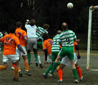
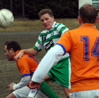
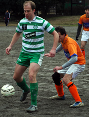

|
OiFuto 1, Sat 18th February. The Celts kept up their relentless charge towards division 1, with a 9th straight victory in the league. Indeed since the horror show opening 20 minutes in the very first game of the season V Jets, when 4 goals were let in, the Celts have conceded only 5 more goals in over 9 and a half games.
Barbarians v Celts games are always keenly fought, and the Barbs seemed well up for it judging by the mini-army of players they brought along. The Celts, for the second game running suffering late withdrawals of key players, nervously awaited the arrival of 2 players who committed the schoolboy error of getting on the express monorail to Haneda.
The opening exchanges were tight, the only chance coming when Magoo struck a shot that was well saved by Fred in the Barbs goal.
Hussein was making a nuisance of himself up front, his pace causing the Celts some moments of anxiety, but were well swept up by Benny and Seamus in the centre of defence. Aki in goal did well to keep out a cross cum shot from the left before the Celts took the lead in somewhat controversial circumstances. A long ball from defence was flicked on by Neil, to an offside looking Adam who smashed the ball to the roof of the net. The Barbs appealed in vain for offside, but with their linesman, not for the first time, attempting to call offside 20 yards away from the line of the last defender the referee made the correct decision of allowing the goal. It was to be the key moment of the first half, with the Celts visibly relaxing and starting to play more football.
Half time and the Celts expecting a rallying cry from Eugene were somewhat confused by a story about bulls and hills and prize cows, but the general message was more of the same, keep the ball and the chances will come.
The beginning of the 2nd half ran along the same lines of the first, and the Barbs thought they had equalised when centre forward jaffa ran on to a long ball and beat the onrushing Aki, only to see the ball bounce agonisingly off the ground and onto the crossbar, with Seamus following up well to clear. This escape was met with a barrage of "lucky Irish Ba****ds" from one "slightly" bitter Barbarians midfielder, however the score remained one nil and with it passed the Barbs only clear chance -with a touch of Mourinho,the Barbarians management strangely substituted the danger man striker immediately afterwards, much to the relief of the Celts defence.
Glynn leading the line for the Celts with Neill in the second half showed for the ball well and Neill shaved the foot of the post from one Dermot-led counter attack. Not to be denied, 10 minutes from the end Neill got the better of a 50-50 challenge with the Barbs left back Austin and slotted in via the post to seal the win.
Another good win for the Celts, along with the Jets 5-4 win over Stoneds pretty much leaves it as a 3 way fight for promotion, with Shane up next in what will be another key game.
Key players for the Celts included Sam, making a solid debut and Seamus in defence, Dermot and Adam midfield, but again it was Benny who stood up to everything the Barbs had to offer and just about shaded the MoM award.
Report - Ben Cliffe.
|